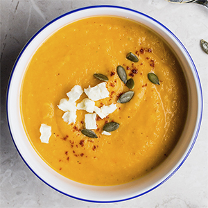

Cremet græskarsuppe
Ingredienser til 4 pers.
- 600g hokkaido græskar
- 100 g løg
- 1 fed hvidløg
- 5 dl hønsefond
- 1 dl fløde
- 10 g salt
- 3 spsk citronsaft
- Frikkværnet peber
- Chipotle chili peber
- Fetaost
- Smør (til stegning)
Sådan gør du:
Skræl græskarret, og skær det ud i grove tern (gem et lille råt stykke til pynt). Pil og hak løg og hvidløg. Svits løgene i smør, og tilsæt de udskårne græskar. Tilsæt hønsefond, og lad det koge i 15 minutter. Kom herefter fløde i, og kog i yderligere 5 minutter eller længere til græskaren er mør. Blend suppen til en glat og cremet masse. Juster konsistensen med vand, hvis den er for tyk. Smag suppen til med salt, peber, citronsaft og chipotle chili peber, så balancen bliver helt rigtig. Det søde græskar skal krydres godt, så suppen ikke bliver for tung.
Server suppen rygende varm med ristede græskarkerner og fetaost.